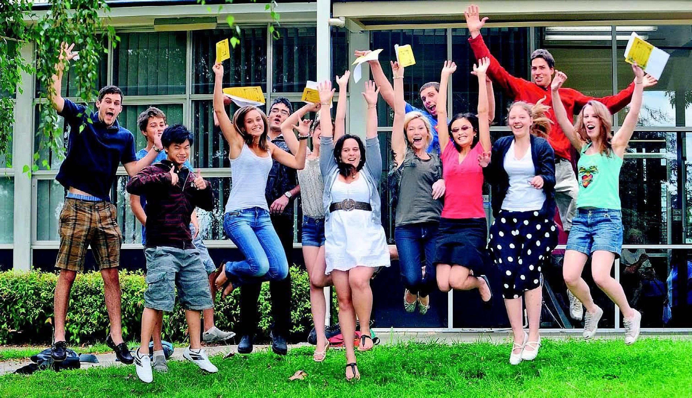
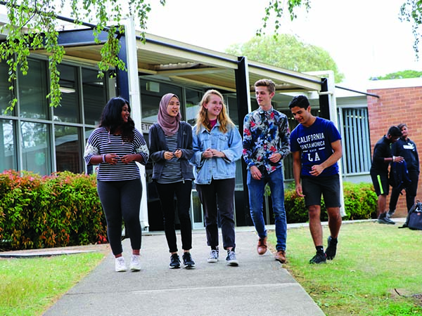

| Block A | Home | Block C | Block D | Block E | Block F | Block L | Block S | Switch CSS |
|  |
B BlockNestled within Narrabundah College's B block lies a dynamic hub where the worlds of English and literature intersect, inspiring students to explore language and storytelling with passion and purpose. Here, classrooms buzz with lively discussions and insightful analyses, guided by dedicated educators who nurture critical thinking and communication skills. In the English classrooms, students delve into the richness of language, from dissecting classic texts to crafting persuasive arguments. Adjacent, the literature department offers a journey through diverse literary works, fostering an appreciation for different cultures and perspectives. Through writing assignments and creative projects, students unleash their creativity and find their voice. As the day unfolds in B block, students emerge with a deeper understanding of the power of words and the transformative impact of literature. Armed with newfound insights and skills, they embark on their own literary adventures, poised to make their mark on the world through the written word. |
Still B BlockNarrabundah College's B block stands as a bastion of literary exploration and linguistic mastery, where the realms of English and literature converge to inspire and enlighten students. Nestled within its walls are classrooms buzzing with intellectual discourse and creative expression, fostering a deep appreciation for language and literature among learners. At the heart of B block, English classrooms come alive with the vibrant exchange of ideas and the cultivation of critical thinking skills. Here, passionate educators guide students through the intricacies of language and literature, nurturing their abilities to analyze texts, craft persuasive arguments, and communicate effectively. From Shakespearean sonnets to contemporary novels, each lesson serves as a gateway to understanding the nuances of language and the power of storytelling. Adjacent to the English classrooms, the literature department ignites a passion for narrative exploration and cultural appreciation. Through the study of diverse literary works spanning genres and time periods, students embark on a journey of discovery, uncovering universal truths and exploring the complexities of the human experience. From classic literature to modern masterpieces, each text serves as a portal to different worlds and perspectives, enriching students' understanding of themselves and the world around them. Beyond its role as a center for academic inquiry, B block serves as a hub of creativity and self-expression, where students are encouraged to hone their writing skills and unleash their imagination. Whether through analytical essays, creative writing assignments, or theatrical performances, students in B block are empowered to find their voice and make meaningful contributions to the literary landscape. As the sun sets on another day of learning and discovery in B block, students depart with a deeper understanding of the power of words and the enduring legacy of literature. Inspired by their experiences within its walls, they emerge as thoughtful scholars and passionate advocates for the written word, ready to embark on their own literary journeys with confidence and conviction. |
 |